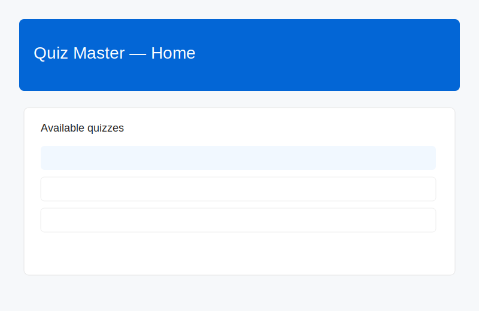

Quiz Master

Overview
Quiz Master is a desktop quiz application I built using Java Swing. It supports timed quizzes, configurable question sets, per-user scoring, and persistent storage using a SQL database via JDBC.
The application is suitable for classroom practice, small competitions, and self-study. It demonstrates UI design with Swing, data modelling, and JDBC integration for reliable persistence.
Code: GitHub repository
Download: Desktop JAR available in the repo's Releases (or compile from source).
Key features
- Timed quizzes with per-question time limits and an overall timer
- Question management: add, edit, import/export question sets (CSV)
- Scoring and result persistence using a SQL database (MySQL / SQLite via JDBC)
- Configurable difficulty levels and categories
- Admin view for reviewing results and managing questions
Screenshots & demo
Click any image to open it in a new tab. Replace these placeholder images with real screenshots in /assets/quiz-master/ if you have them.
Architecture & tech
This project uses:
- Java 8+ with Swing for the desktop UI
- JDBC for SQL persistence (works with SQLite, MySQL, Postgres)
- Maven or Gradle build scripts (source repo contains instructions)
How to run (dev)
- Clone the repo:
git clone https://github.com/NManishkumar/APP-quiz - Open the project in your IDE (IntelliJ / Eclipse). Build with Maven or Gradle.
- Run the main class (the README in the repo shows the entry point). For a built JAR:
java -jar quiz-master.jar - The app will create a local SQLite DB by default (or connect to configured DB via JDBC URL).